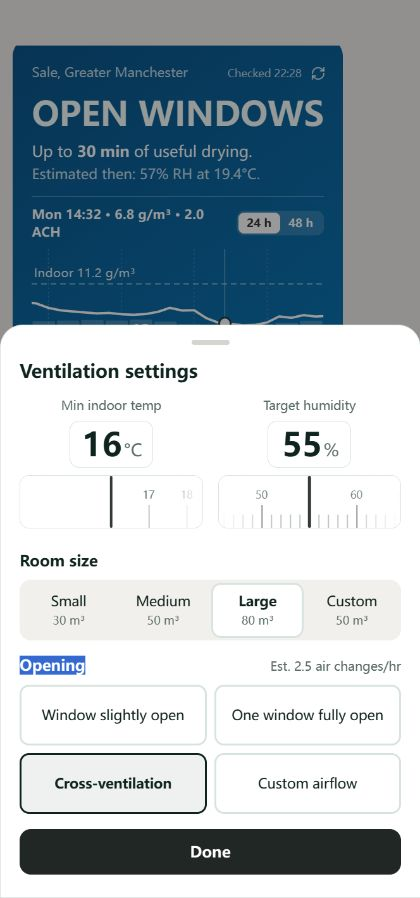
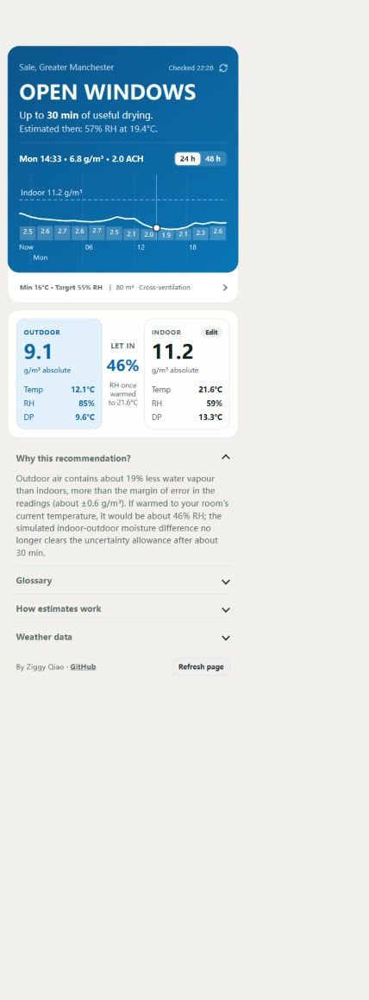
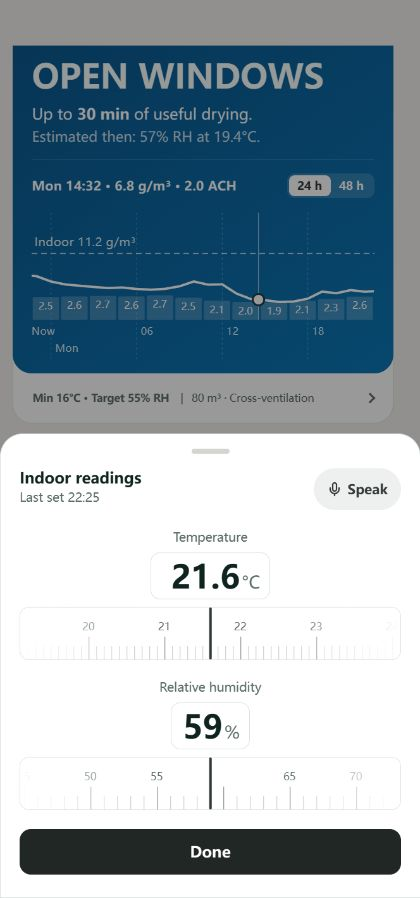
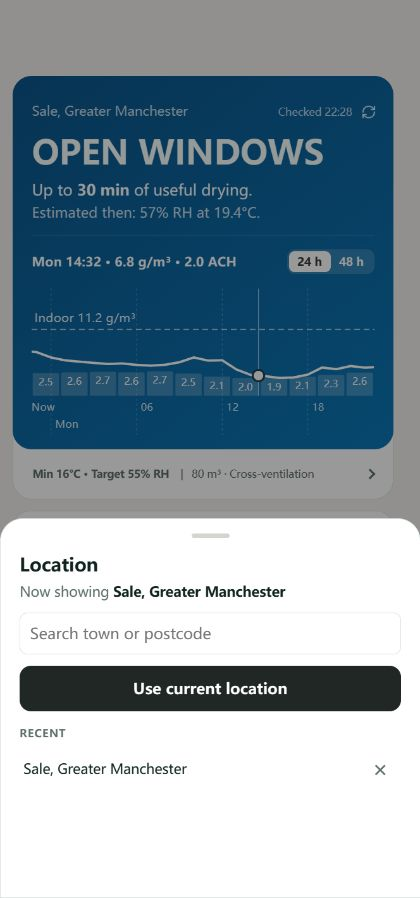

TARGET MET
At or near your target. No ventilation needed now.
#025446 → #137738 · 145°Drier · #FFFFFFUncertain · #FFD27AWetter · #FFB3A8
Warm neutral controls, clear weather meaning and consistent keyboard focus. The palette shipped in v0.7.1 and the Indoor summary in v0.7.2; this board also records the current moisture comparison, chart-colour rules and v0.7.4 timer.
Use named roles. Keep white sheets and dark primary actions; apply warm greys to the supporting interface.
#F2F0ED#FFFFFF#F0EEEB#E6E2DD#D9D3CC#D8D2CA#8D857B#403C37Secondary text: #706A63. Dark primary: #202725, retained.
Source-verified current colours and moisture rules. These are illustrative specimens, not live weather. Recommendation, current moisture comparison and forecast-line colour each express a different calculation. Jump to the full AH chart or loading skeleton.
At or near your target. No ventilation needed now.
#025446 → #137738 · 145°A useful drying window, possibly limited by the forecast or temperature.
#214487 → #056B97 · 145°Wetter air, minimum-temperature limit, or immediate condensation risk.
#7B242E → #9E441D · 145°Uncertain benefit or no useful drying window.
#633F03 → #756202 · 145°Line-colour keys repeat on each background to make the separate palette visible; they are review aids, not proposed new chart legends.
Outdoor moisture is reliably lower when both readings are expressed at the indoor temperature.
Ink #1769AA
Fill #E2F1FBThe shared-temperature difference is within or on the uncertainty margin.
Ink #8A6700
Fill #FFF3C4Outdoor moisture is reliably higher at the indoor temperature.
Ink #A23B2A
Fill #FFE8DFThe cards display actual AH at each air temperature, while the Outdoor tint and matching Let in text use the shared-temperature comparison. The Indoor card remains neutral. Condensation risk is a separate red warning when warmed RH reaches 100%.
The curve height plots actual outdoor AH. Its colour follows the shared-temperature moisture comparison across forecast time; amber covers the entire uncertainty interval, with smooth transitions outside it.
Tue 04:30 · 11.8 g/m³ · 2.9 ACH
| Chart layer | Current treatment | Meaning |
|---|---|---|
| Curve | White / amber / coral across forecast time | Actual outdoor AH height; colour from shared-temperature moisture comparison |
| Indoor reference | White dashed line at 70%; white label | Actual indoor AH baseline |
| Airflow bars / values | White at about 22% / solid white | Estimated ACH, without a wet/dry category |
| Time and day text | White at about 85% | Local forecast time |
| Grid / day separators | White at about 9% / 30% | Supporting structure |
| Cursor / point | White 65% / curve colour with #233D4E outline | Inspected time |
| Selected g/m³ reading | Curve colour; time and ACH stay white | Actual AH at the inspected point |
Loading outdoor forecast…
-- Unavailable · #899493
Voice status and transcript panels use the warm control surface #F0EEEB and muted #706A63 text. The waveform keeps its near-black semantic colour.
Location and voice errors rely on wording. The warm theme adds no new success/error colour.
Independent colours can coexist. Green TARGET MET with a blue Outdoor card is valid. Red KEEP CLOSED due to temperature with a blue drier-air card is also valid. Neither makes the AH curve inherit that surface’s colour.
Old forecast-pill CSS retains pale green #DFF8ED with #087F5B-derived borders, but the current dashboard does not render those pills. The green TARGET MET gradient is active. The token --open (#111A17) is near-black, not success green.
All mappings here were checked in source. Alternate live outcomes and every chart/background contrast pairing still need visual checks. The current AH palette is retained by user direction; this is not a blanket contrast-compliance claim.
Static specimens above show each state. Try hover, press, or Tab on this sample:
Selection persists. Pressing is temporary. Keyboard focus adds a 2px outline with a 2px clear gap outside the visible control: dark ink on light surfaces and white on the verdict. The ventilation summary and dashboard explainer headings retain wider horizontal focus boundaries. Disabled controls do not react to hover or press.
Illustrative specimen: this flat white strip appears above the verdict when enabled in Settings. It is hidden by default; the controls shown here are visual samples.
20px outer radius, subtle border, no shadow. The 1px divider is vertically centred; units and reading age are muted. At 320px, the age sits below the Indoor heading. Both actions retain 44px targets in the app.
The moisture comparison panel also has a 20px outer radius; its two inner cards stay at 14px. The verdict and white footer share 20px outer corners.
These controls affect only this review board. They do not change the app’s settings.
iPhone/iPad verdict durations open a sheet with a temporary 1-180 minute value and stacked ruler. The sheet uses a 1.2rem Settings-style title, the existing mobile drag handle, an 8px field-to-ruler gap and a 20px ruler-to-Start gap. No timing-context paragraph or separate bottom Close action appears.
Current local refinement: Start closes the sheet before the Shortcut handoff. All sheets return focus quietly unless the opener had visible keyboard focus at activation. Header close controls appear from 640px; mobile retains drag dismissal and existing Done actions.
The centred help symbol has a user-requested 32px-wide, 44px-tall target and opens the shared Shortcut installation link. Verdict targets retain original text spacing, with dotted underlines at 50% opacity. Timer handoffs were confirmed by the user from Safari and the Home Screen app. See the written system for behaviour and remaining device checks.
White selected segment, persistent dark border, bold name. Arrow keys move the radio selection.
1px borders at rest; 2px dark border and a lighter fill for selection.
Equal 88px fields. Whole-degree minimum temperature. One focus ring around value and unit.
Against white: 1.50:1 versus 3.64:1. A pale divider should not be the only clue that a number is editable.
21.3°C 22px Indoor strip reading
Ventilation settings 20px title
Body and typed input · 16px
Controls and sections · 14px
Metadata · 12px. The Indoor category and chart annotations may remain 11px.Manual edits save immediately; Done closes. Voice changes require review and Apply. Rulers support typing, dragging and arrow keys. Sheets contain their scroll, adapt to the visible viewport, and return focus on dismissal.
Preserve the current centred 496px maximum app shell. Location, voice, custom panels, loading, errors and disabled states are specified in the full written system.
The app uses the reviewed warm palette and current component states. This board illustrates the current local moisture rules alongside released design rules and historical v0.7.2 UI refinements.
The written system records the remaining acceptance checks and behaviour contracts.
These checks are recorded in the written system. The updated AH line colours are shown above.
These historical captures show the app before the warm palette was applied. Open each image for the full view.



